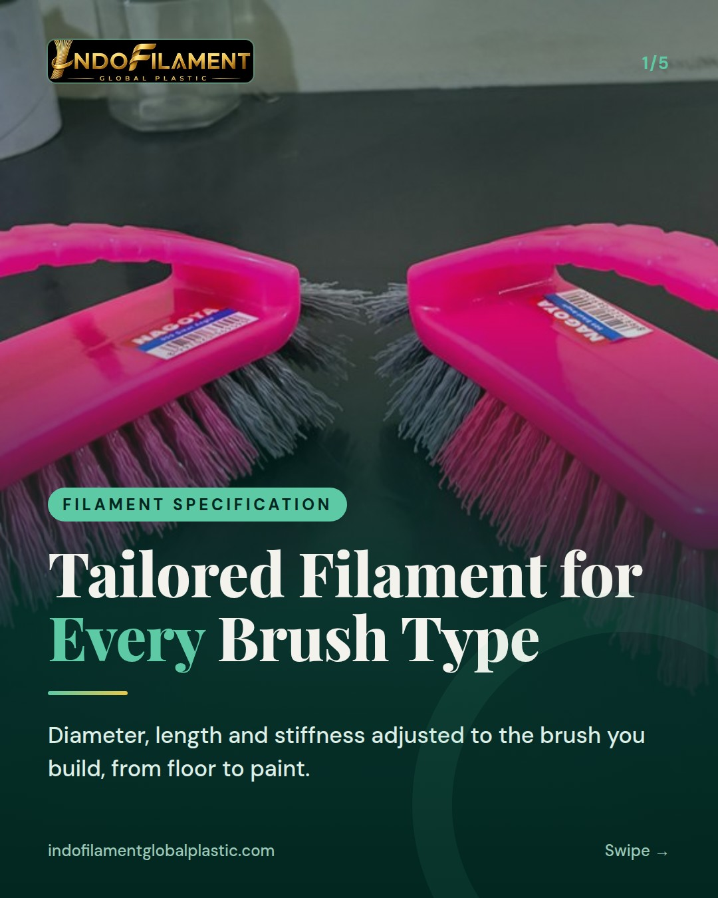
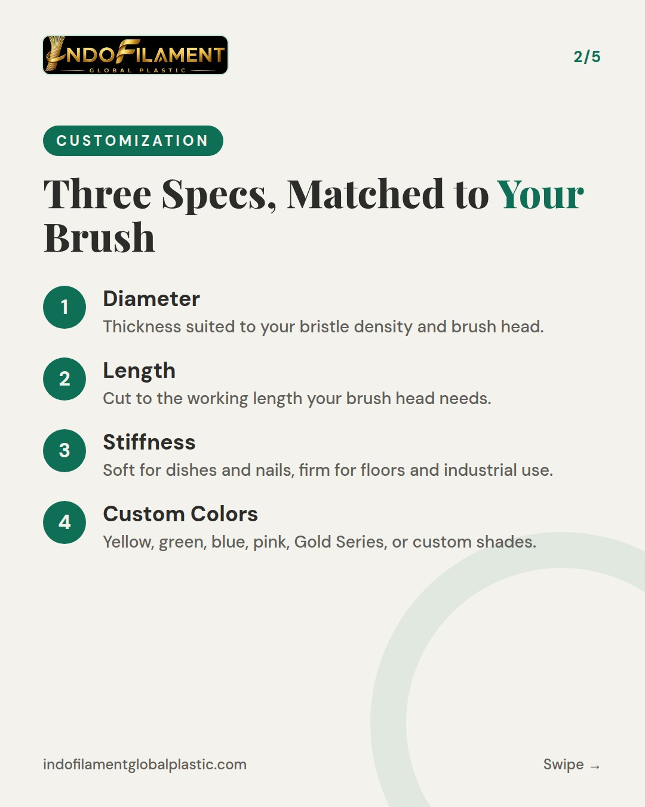
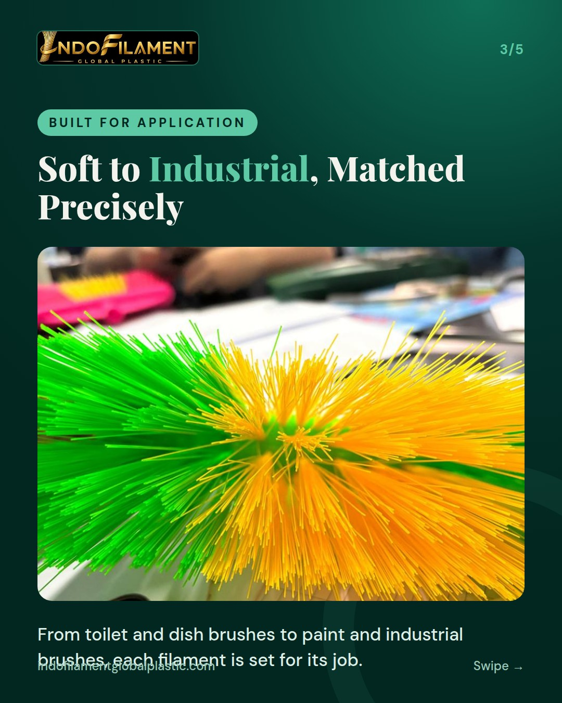
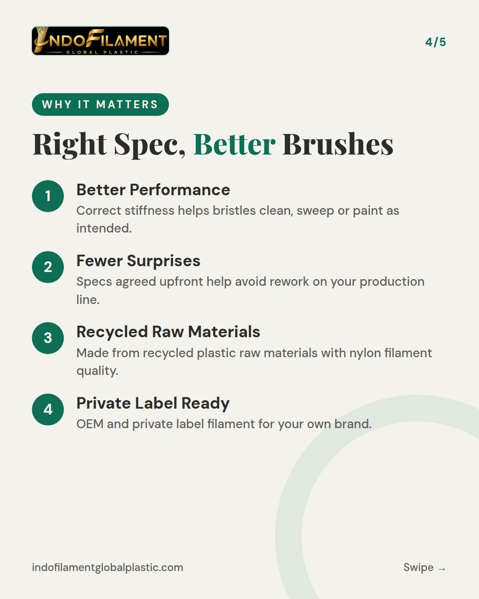
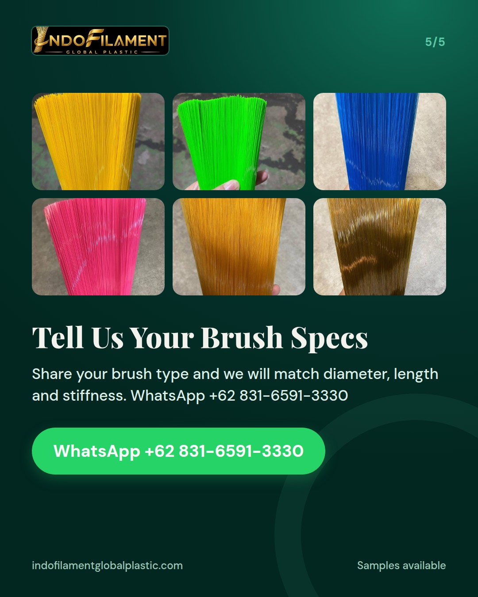

Diameter, panjang, dan kekakuan filamen: menyesuaikan dengan jenis sikat





Not every brush needs the same filament. 🪥 A floor brush, a dish brush and a paint brush each demand a different balance of diameter, length and stiffness. At Indofilament Global Plastic, we adjust all three to the brush you are building. What we tailor: • Diameter to match your bristle density and brush head • Length cut to your working requirement • Stiffness from soft for nails and dishes to firm for floors and industrial use • Colors including yellow, green, blue, pink, Gold Series (Bright Gold and Copper Gold), and custom shades Our filament is made from recycled plastic raw materials, and we supply OEM and private label programs for brand owners, distributors and importers in domestic and export markets. Got a specific brush in mind? Send us your application and we will work out the right specification with you. Request a sample via WhatsApp +62 831-6591-3330 or DM us. You are also welcome to visit our factory in Tangerang. #broomfilament #brushfilament #nylonfilament #broommanufacturer #brushmanufacturer #madeinindonesia #privatelabel #OEM #goldseries #recycledmaterials